·Cloudflare·Python
This is Planet CloudflareAn RSS aggregator on Python Workers, queues, D1, and search — a long-running demo of the Cloudflare platform.
Developer Advocacy at Cloudflare
01Folio
·Cloudflare·Python
This is Planet CloudflareAn RSS aggregator on Python Workers, queues, D1, and search — a long-running demo of the Cloudflare platform.

·AI
GeistFabrik and AI-augmented software development at ARIAUsing LLMs to explore unexpected adjacencies and new ways of building software.
·Apple
Exporting PDFs from Keynote with Better Keynote ExportA practical fix for getting readable speaker notes out of Keynote again.

·Apple·DevRel
Why are the presenter notes ugly when I export them as PDFs from Keynote?The older complaint that made the newer Better Keynote Export fix worth celebrating.
02Folio
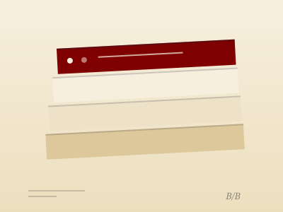
bobbinSearchable archive of Alex Komoroske’s weekly Bits and Bobs observations.
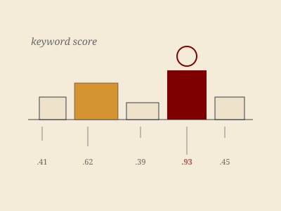
yaketTypeScript port of the YAKE keyword pipeline for Workers, Node, and browsers.
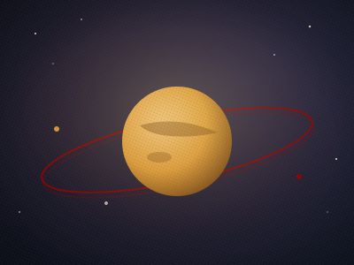
planet_cfEdge RSS and Atom aggregator with searchable feed output on Workers.
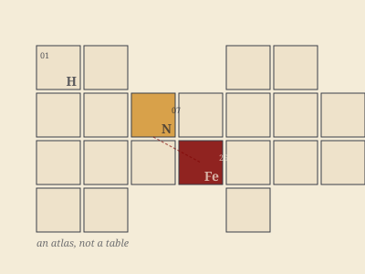
atlasA periodic table as navigable atlas, graph, folio, and visual mark system.
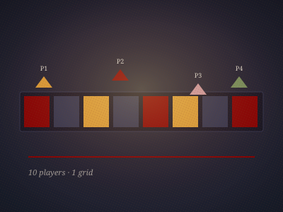
keyboardiaReal-time collaborative step sequencer for up to ten players.
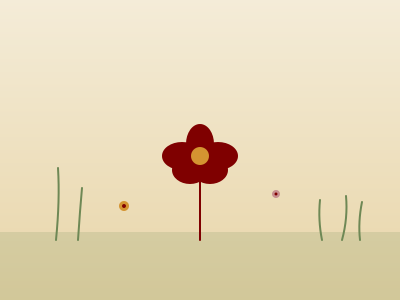
gartenZero-dependency animated canvas garden of flowers, grasses, and foliage.
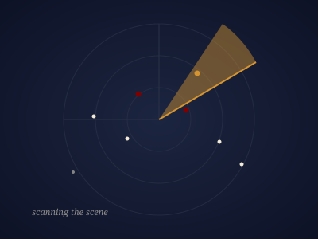
demosceneScans curated GitHub accounts for public Cloudflare DevRel Workers projects.
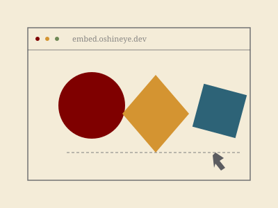
embed.oshineye.devSelf-contained interactive visualisations for Blogger posts and other embeds.
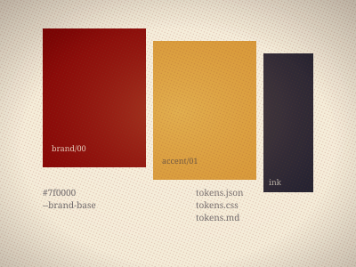
cf-workers-design-systemAgent-first Workers design tokens published as JSON, CSS, and Markdown.
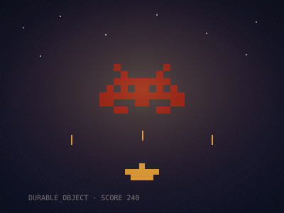
vadersMultiplayer Space Invaders for terminal and browser on Durable Objects.
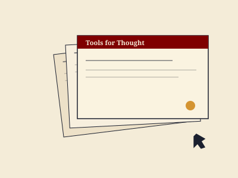
slide-makerClaude skill that reads repos and produces grounded Slidev decks.
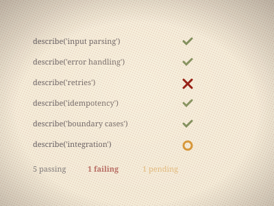
testing-best-practicesAgent skill grounded in real testing patterns and TDD practitioners.
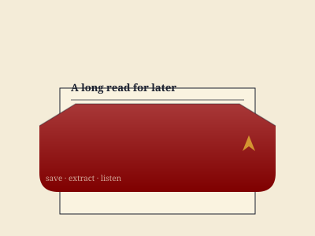
tascheSelf-hosted read-it-later service with extraction, archive, and audio.
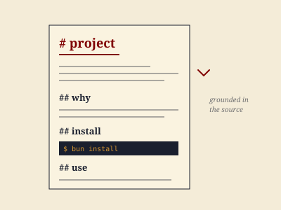
good-readmeClaude skill that writes READMEs from source analysis, not templates.
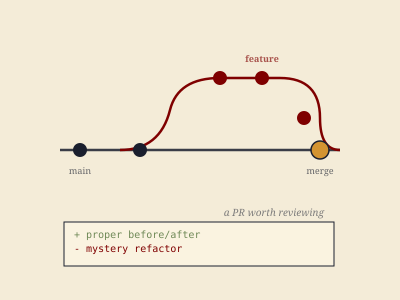
good-prClaude skill for shaping pull requests maintainers want to review.
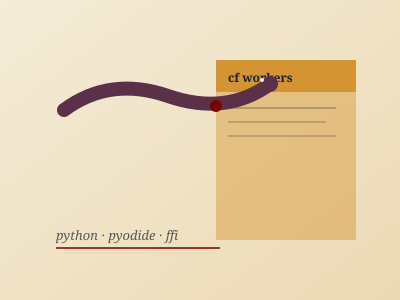
python-workers-skillGuidance for Pyodide, JS/Python FFI, and Python Workers constraints.
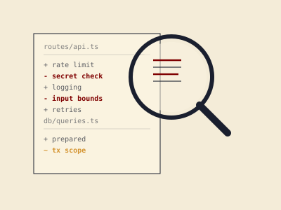
audit-skillAudit toolkit with branch verdicts and focused deep-dive review modes.
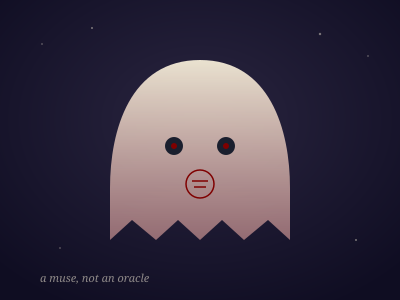
geist_fabrikPython divergence engine for Obsidian; a muse, not an oracle.
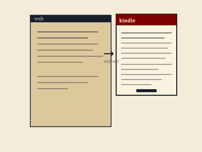
web2kindleChrome extension that turns web articles into Kindle-ready ebooks.
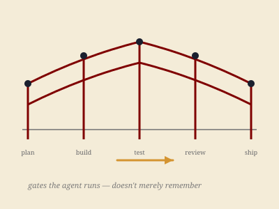
guardrails-skillLifecycle quality gates that agents run instead of merely remembering.
03Folio